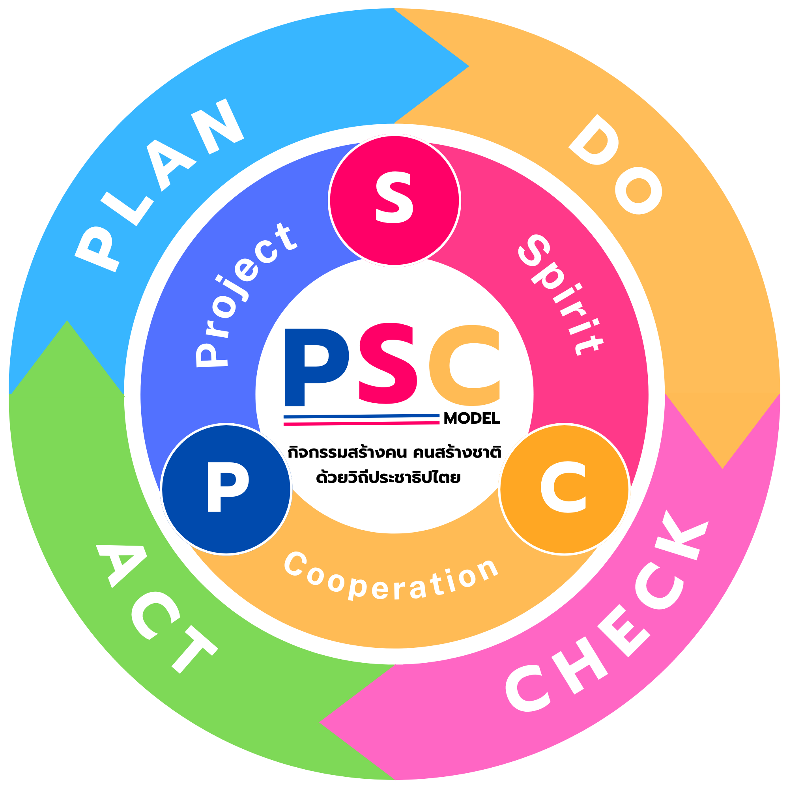

PSC MODEL
กิจกรรมสร้างคน คนสร้างชาติ
ด้วยวิถีประชาธิปไตย
สภานักเรียนดำเนินโครงการ PSC Model เพื่อพัฒนาการทำงานอย่างสร้างสรรค์ อุทิศตน และร่วมมือกับทุกภาคส่วน โดยบูรณาการวงจรคุณภาพ PDCA เพื่อพัฒนาอย่างต่อเนื่อง
